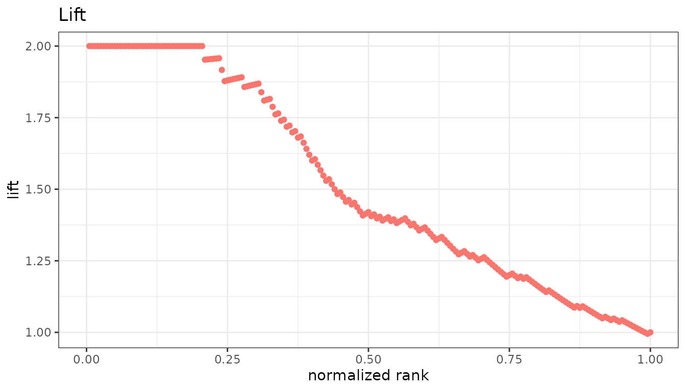
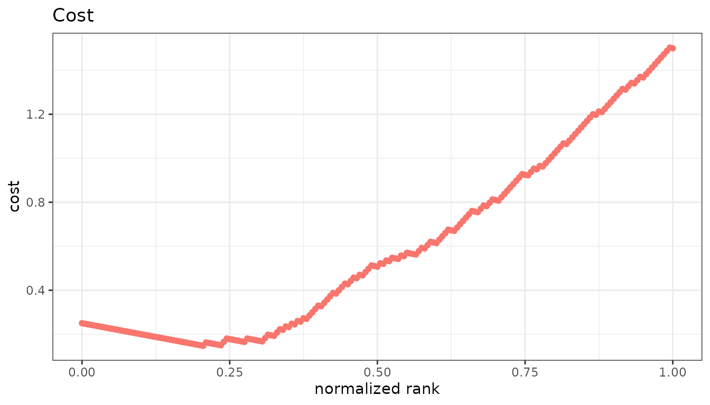

Metrics that answer questions the confusion-matrix rates do not: how
much better than random is this cutoff, how much does it cost, how much
does it tell us. All of them are opt-in through
metrics =.
library(precrec)
library(ggplot2)
samps <- create_sim_samples(1, 100, 100, "good_er")Lift and odds
| Metric | Formula | Range |
|---|---|---|
lift |
sensitivity / rate of positive predictions | 0 upward |
odds |
(TP x TN) / (FN x FP) | 0 upward |
Lift is how many times better than random selection the cutoff is: a lift of 3 means the flagged group holds three times the share of positives the whole dataset does. It is the standard metric in marketing and screening, where the question is what to do with a limited review budget. The odds ratio is the odds of being positive among the flagged against the odds among the rest.
points <- evalmod(
scores = samps$scores, labels = samps$labels,
mode = "basic", metrics = c("lift", "odds")
)
autoplot(points, "lift")
Likelihood ratios
| Metric | Formula | Range |
|---|---|---|
positive_likelihood_ratio |
sensitivity / FPR | 0 upward |
negative_likelihood_ratio |
FNR / specificity | 0 upward |
The two halves of the odds ratio - LR+ divided by LR- is exactly
odds - kept apart because they answer different questions.
LR+ is how much a positive prediction multiplies the odds that a case
really is positive, LR- how much a negative one does. A test can be
worth using on one alone, and the odds ratio, being the quotient, hides
which is doing the work.
Both are ratios of rates rather than counts, so neither moves with the prevalence. That is what lets a value carry from one population to another, and also the catch: a cutoff with an excellent LR+ still flags mostly false positives if positives are rare enough. Precision, on the confusion-matrix page, answers that.
Cost
cost weights the two kinds of error separately, as
(cost_fp x FP + cost_fn x FN) / all. With the default
weights of 1 it is the error rate. Set them to what the two mistakes
actually cost you, and the minimum of the curve is the cutoff to
use.
costs <- evalmod(
scores = samps$scores, labels = samps$labels,
mode = "basic", metrics = "cost", cost_fp = 3, cost_fn = 0.5
)
autoplot(costs, "cost")
The metric is not normalized, following ROCR, so its
scale is the scale of the weights you gave.
Information
| Metric | What it is | Range |
|---|---|---|
mi |
Mutual information between prediction and truth, in bits | 0 to 1 |
chisq |
Pearson chi-square of the 2x2 table, n x mcc^2
|
0 upward |
Both ask how far the table is from independence rather than how good the predictions are. They are symmetric: a perfectly wrong classifier scores as high as a perfectly right one.
SAR
sar is the mean of accuracy, the ROC area, and one minus
the root mean squared error - a single summary harder to game than any
one of them. The RMSE part reads score values rather than ranks, so it
needs probabilities between 0 and 1; given anything else it warns and
returns NA, and every other metric in the same call is
still returned.
Where values are undefined
Several of these are undefined at the top and bottom of the ranking, where the 2x2 table has an empty cell.
-
oddsandchisqareNAthere. Some tools report an infinity or aNaN;precrecreportsNA, as it does for the undefined end of precision and NPV. - The likelihood ratios are
NAover a longer stretch, not only at the ends. LR+ divides by the false positive rate, 0 for every cutoff above the highest-scoring negative; LR- divides by the specificity, 0 from the point where every negative has been flagged onward. -
miis0there rather thanNA. A cutoff that predicts one class for everything carries no information about the labels, so the value is defined and it is zero.